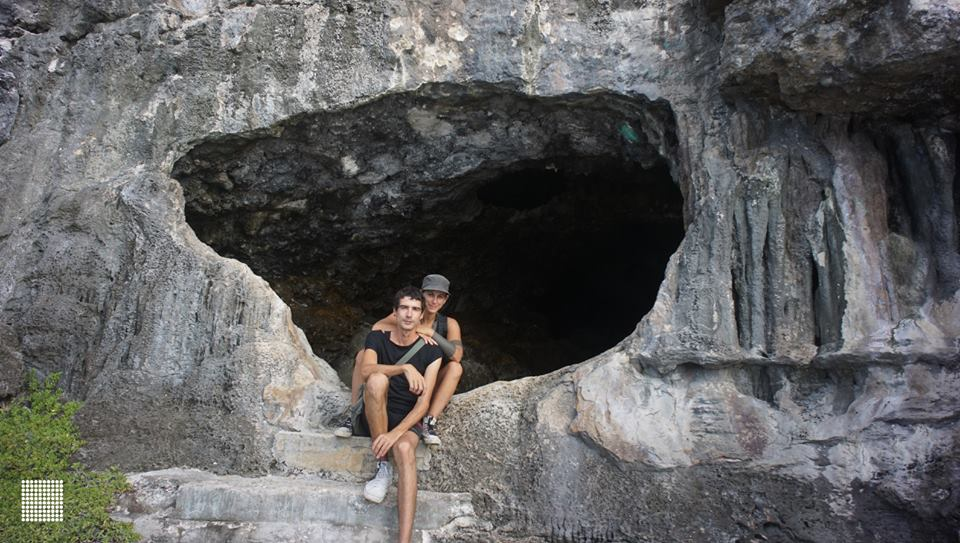
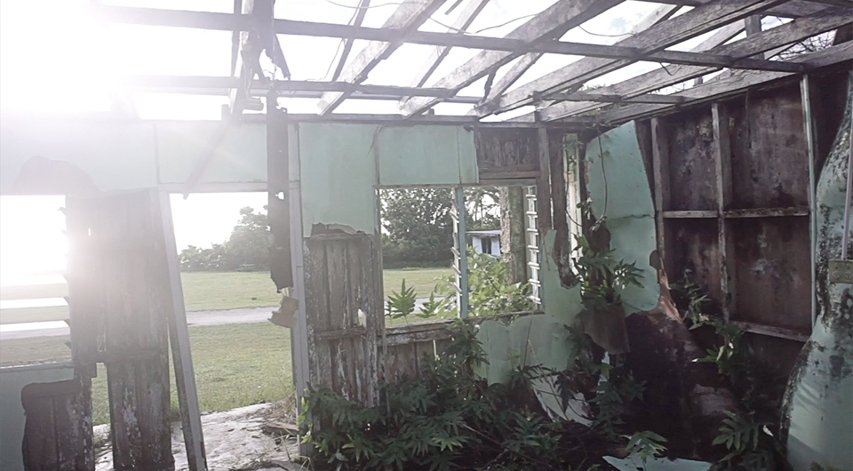
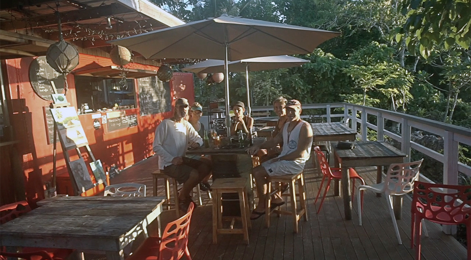
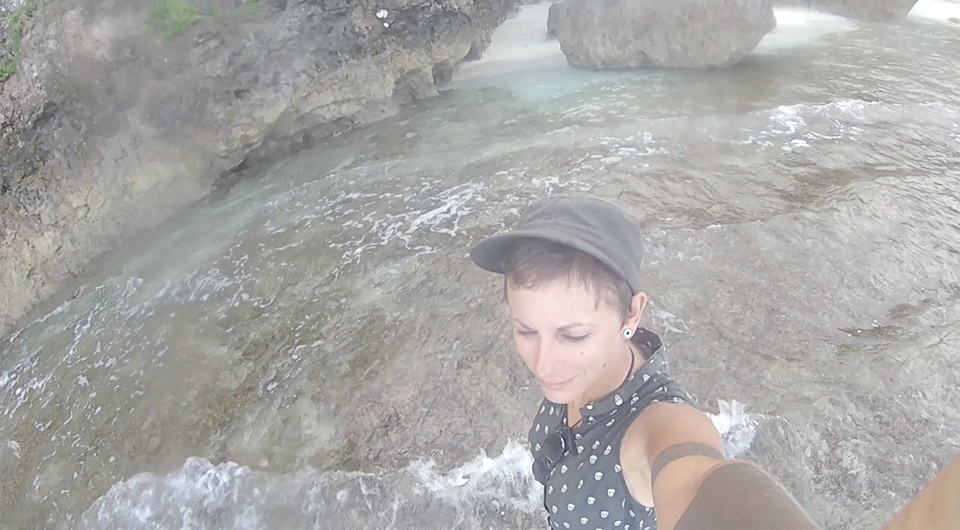
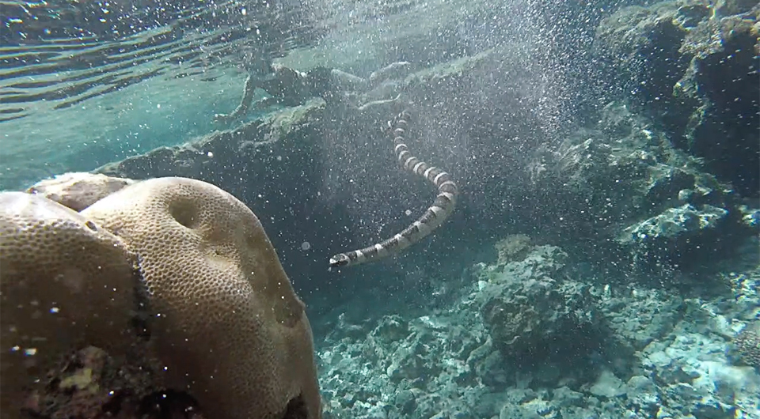
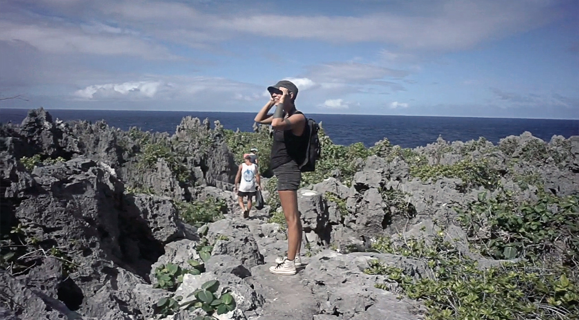

the rock of polynesia
Sailing to niue
Niue, pronounced 'New-ay', a rock in the pacific, one of the largest coral islands on earth. It's the first country to offer free, state-funded, wireless internet to all its residents and has a goal of being completely solar powered - uh. Wow?
We'd also heard that the school gave all of the kids laptops, this, with free internet, makes it a paradise for game devs. Already then, we made plans to move there, like all places in the tropics with a good connection and supply of coconut and beer. I remember when we were speaking of staying in Nuku Hiva too, and in La Paz. We make a home everywhere we go. This, makes it hard to leave, but this ease of adaptation also makes us eager to go forward, to see where else we could live. This is what we do, we set up house in different places, sometimes for 8 months at a time.
We weren't going to be staying long in Niue though, but not by choice.
Alofi Bay, the only anchorage on the island, is not protected in any wind other than east. If the wind turns in an unfavorable direction, staying could be dangerous and we'd be forced to leave.
One other troublesome thing about the 'rock of Polynesia', is that they hiked the departure fees from 35$ to 80$ per person. Anyone who enters Niue, when leaving, need pay this fee. That's a lot of money, we thought, to visit a place so small.
In the end I'm glad we went, because of all the places we'd been, Niue was our favorite.
We arrived at 6am in the morning, rounding the island to Alofi bay that lay on the west side. A squall lay between me and the anchorage, a puffy cloud with a thick wet skirt beneath it. I pulled my hood on, grabbed the helm firmly and quickly skipped through songs on my phone till I landed on anything by Purity ring. Ah! Sea castles. Yes. Perfect.
WOOSH! A gust of wind comes, but I'm ready. The song begins then too.
- I could build a machine.
The boat heels, but I've got this!
- Draw pictures for the walls.
Then comes the rain, heavy droplets, washing the salt crystals away. It left as quickly as it came, giving way to the sun, its face reflected in a thousand wet pools on the deck.
- Hang up all my fragile frights.
I point Pino towards the anchorage. Tall masts ahead, signs of life. The water, a deep blue, as deep as I've ever seen it, spotted with brightly-colored floaters.
- 'Display that you may see-'
I sing aloud, turning the music off.
- 'Devine! We're here!'
The sleeper awakens.
Arriving to niue
We tethered Pino to a mooring, a bright ball, connecting us to the ocean floor. I like to imagine we're an airship sometimes, and that we're afloat, high into the air - being afloat and aloft, the two are all too similar.
The water here is abnormally clear for its depth, water visibility can often reach 60m or more as the coral and limestone filter out sediment in the water. We'd heard that humpback whales swim in the mooring field now and again, how amazing it would be to see them with such clarity! The whales did come, under the cover of night, we could hear them surfacing near the boat but we couldn't see them. The sound of their breathing was pleasant enough. Ah, how I loved the idea of sleeping amongst giants!
Checking into Niue was simple and fast, a rare treat. They picked up Devine at the pier, along with other cruisers that had arrived that same morning, and drove everyone around to various offices to sign and complete some documents.

When arriving in a new place, it is customary aboard Pino to make pancakes usually accompanied by maple syrup. We are down to one can. We promised to keep it for our arrival in New Zealand, to celebrate the completion of the 2nd leg of our pacific circumnavigation. Instead of liquid gold, we opted for bitter orange jam instead, not the same, but a good alternative.
We kept the radio on that day, and overheard a conversation between two cruisers, one had an unmistakable quebecois accent. The quebecois was speaking to another yachtie, who said they'd checked the grib files (a special binary format of weather data) that morning, and that the weather was supposed to shift to the west. As I mentioned before, staying in this unprotected anchorage in westerlies was a BAD idea.
- 'It's going to be a real shit fest out here when that weather comes rolling in.'
- 'I don't see this on the grib files.' The quebecois said.
- 'I'm tellin' ya! Real shit fest. We've got to check out fast.'
I looked at Devine.
- 'Shit. Does that mean we have to leave? We just got here!'
We had checked the weather that same morning and did not see anything coming from the west on the grib files, but now we had doubts. Devine checked again, and saw nothing different.
- 'That can't be right. Looks clear.'
We could hear them bickering on the radio still, and they agreed to meet on the pier to discuss it further. We thought it a good idea to go, to try and untangle this mess. As it turned out, this was a mistake - phew! Somehow, one of them messed something up while checking the gribs. We had plenty of good weather, and time to explore the island after all!

The dinghy crane
A thing that is unique to Niue, is that the island stands at 60m above sea level at its highest, 30m at its lowest. The pier wasn't nearly that tall, but it rose high enough to making getting onto it difficult. It had stairs carved on one side, to allow people like us to disembark, although these were slippery, and getting on with a running swell required much patience. Because of the constant wave action and current, its safer to hoist dinghies out of the water. A crane is set up on the pier to do just that. Even bigger boats make use of it. If fishermen want to fish, they need to truck their boats over to the pier, and they've got to lower it down into the water with the crane. When done, they've got to bring it back up the same way. No boat stays in the water.

Iggy the dinghy made use of the crane too, and was parked up alongside a few others of its kind. Ours is often the smallest moored onto a pier, Niue was no exception, all the other dinghies were heavier and longer than our Iggy - none though, bore a name as cool.
Walking up to the island, we passed the station powering the crane, it was solar-powered. Going up further, we saw showers that were also solar-powered. Um, the rumours were true! Many other businesses were equipped with these wonderfully green devices.
Along the road we spotted a large gaping hole, as if someone had, 'a-la- minecraft', carved blocks out of it. The island is full of these limestone caves and chasms. Many a time, did we argue about the pronunciation of chasm. Ka-zim? Cha-zim?
Alofi
The town of Alofi is on a road which circles the entire island, there are a few other smaller roads that criss-cross the land. We walked to the yacht club to to let them know we'd taken one of their moorings, a young new zealand girl was at the desk. The Commodore was on vacation, she explained, pointing to a guestbook on the desk for us to sign. The guestbook logged every yacht that came to Niue. Looking through, we smiled as we saw the names of boats we knew, now gone. We too left our mark in the log:
Pino was here, July 2017.
The yacht club had an extensive library. We spent much time there, trying to dig up some new books to read. I found a comic by Elise Gravel, funny to find this all the way out here on a tiny island in the pacific. I then saw the name Murakami at the corner of my eye, but it was printed in Polish - damn. I spotted an old 70's vegetarian cooking book, filled with amazing and simple recipes, this one, found a home in our library. Devine was looking for penguin classics, any of them, also hoping to find the elusive 'letters from a stoic' from Seneca. No luck. We asked the stand-in Commodore if she'd been here long.
- 'Not long no, it's hard to get a visa to stay here.'
- 'How come?'
- 'Niueans can live in New Zealand, but we can't live in Niue. Makes sense though, it's not a big island and it would change it completely if there were too many Kiwis around.'
After cyclone Heta hit the island in 2004, many Niueans had their houses demolished and left. We saw this for ourselves when driving round to the south, skeletons of houses bordered the road, inhabited by ghosts and chickens.
During a visit to Hio beach, we spoke to a Niuean who had just returned from living in New Zealand. She started a new business here on the island, a cafe built inside a red container.
- 'Niueans are coming back, ' she said, 'it is our home, all we can do is return here.'
Sea snakes
If you're ever on Niue, this cafe serves breadfruit chips, and the best - and cheapest - craft beer you'll find on the islands. Look for Kalaga-lager (try and say this 5 times in a row real fast), a beer made in New Zealand, but ironically, only available in Niue. The beer costs less than 1$ a can, many cruisers left the island with cases of it. If Pino could stand to carry more weight, we too, would have left with more.
We walked out and continued the tour of our new neighborhood, although there was no one around. No one walking. Occasionally we'd see a car whizz by, once every 10 minutes. We walked past a small Indian restaurant, a place where we could buy data, a school, not much else. We didn't walk much further than this though, due to the presence of a stray pup who was very, very nippy. We turned around and spotted another stray, this one, not so nippy. We make a point of never touching animals we see on the street, this one was no exception, we walked past and headed over to a path leading down to a beach. The stray followed us there and eventually skipped ahead, it looked back to make sure we were still there.
- 'Maybe it's a trap.' Devine said.
- 'But it looks so friendly.' I said, weak to its doggy charms.
- 'Trick of the trade.'
We wouldn't have followed this dog into a cave, but walking down some steps to a lovely beach front, we thought, would be safe enough. Besides, the dog had plans of its own, and began to chase something we couldn't see around the beach.
The beach had beautiful clear sand, and the water was shallow with a hard coral bottom. I put my feet in it, Devine did this too, but then pointed to a shape moving in the water.
- 'Hey look a sea snake!'
- 'Oh wow! It's coming this way!'
- 'Do sea snakes bites?'
- 'I've no idea.'
- 'OH shit. It's swimming faster.'
We darted back onto the sand, maybe it was very eager to say hello. We didn't stay to find out. I later read that some sea snakes are poisonous, and that a bite results in four weeks of excruciating pain, but not in death - pain, not death. Got it.
We had another encounter with a sea snake, in a place where it was king and us mere floating fleshies. We stood on Hio beach, and stared ahead at the long stretch of shallows we'd have to walk to get to the dive pools. A part of the shallows was soft sand, but most of it had an uneven texture that would make walking painful. Both of us, underprepared as always, were barefoot. We walked together, trying to prove to the other that this was nothing and that our feet weren't really being repeatedly penetrated by many sharp rocks.
The water barely covered my knees, then all of sudden, came a hole much deeper. We'd arrived at the pools. The pool had beautiful reef fish swimming in it, and was connected to others by tunnels or openings. We dove in, relieved to give our pained feet a break. The colors were unbelievable, we made a game of chasing each other through the different pools This is how we met the second sea snake. I saw it near me and made a detour to avoid it. Devine was behind me at the time but had not seen it, nor understood why I'd made that particular turn. At that moment too, the snake decided to swim out of its hiding spot. I saw Devine trying to get it to swim somewhere else, pushing walls of water at it with little success.
We swam away, deciding to leave that particular pool to the sea snake. You win this round too, sea snake.
Exploration
We visited many other sights on the island, it's amazing how many wondrous things there are to see here. We walked a stretch of land bearing thousands of spiked coral carved by wind and sea, leading to a drop, a deep crevasse, with a hidden forest of palms.
We passed under giant arches of rock, around spires jutting out of the ground and into caves with walls so smooth they didn't feel real. We climbed down dark chasms, light in hand, and had a lunch of vegetable pitas in the dark next to a river of black liquid.
We swam in many other pools, in crystal clear waters, a mix of salt and fresh that made the surface water blurry.
Sometimes, as we walked in the caves, I would lose sight of Devine. Then moments later, Devine stood 10m above ground on a ledge in that same cave, grinning down at me.
- 'How do you do that...!?'
I was reminded of our time in Japan, when we climbed mount Fuji. Devine was always ahead, perched up on a ledge somewhere and waiting for me, always finding some high place to stand from, and doing so with ease.

We don't get to visit islands so thoroughly usually, since neither of us can drive there are places we just can't go, that is, unless someone offers us a ride. This is how we visited Niue, a place with no public transportation and with a pier that makes it impossible to bring bikes ashore.
We have Leslie and Stu from S/Y Sula to thank for this trip, and for showing us how to open a coconut with a machete. We've since downgraded, cutting them open with a wood knife and a hammer, and I have to say, it's not nearly as cool as when Stu did it in the middle of the road with a long bit of dangerous-looking steel.
Watch a video of our time in Niue.
If you like our content, consider supporting us on...
PATREON